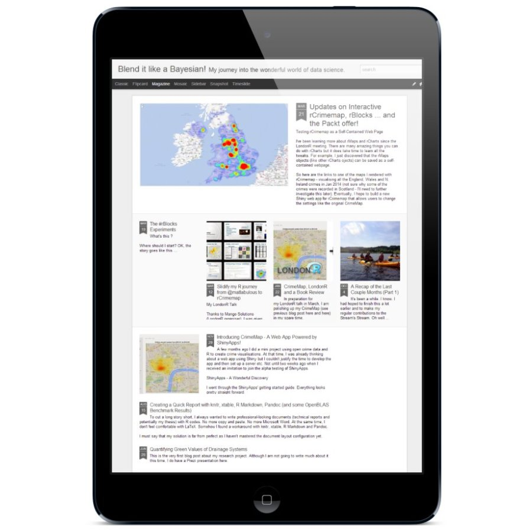

My Blog:
Blend It Like a Bayesian!
I discuss my research and open-source projects in details using my blog (instead of this personal page). It is one of R-bloggers' 550+ contributing blogs. Interested in the behind-the-scenes stories of my projects? Go to my blog

